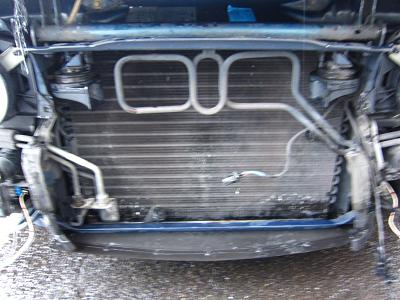
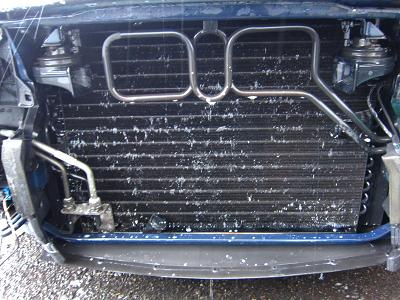
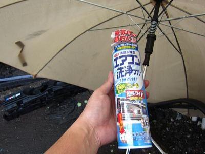
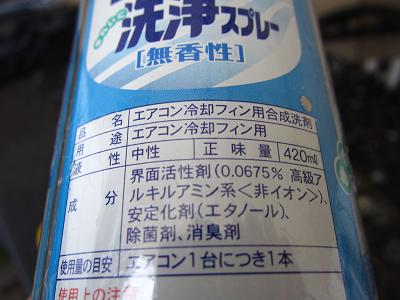
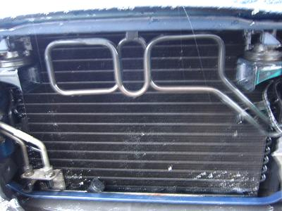
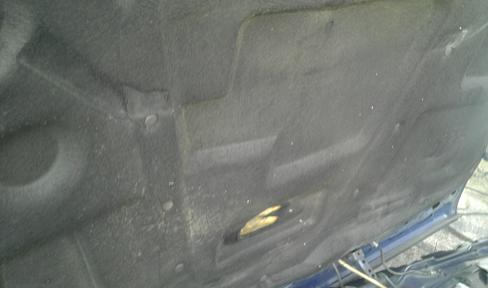

  フロント周りをバラして、電動ファンを外す。 カプラーや電装品に洗浄剤がかからないように袋を被せておいたほうが良いかもしれない。 普通の洗剤を使って大きな埃やゴミを取り除く。 この時フィンを潰さないようにする。
|
  使用する洗浄剤だ。 用途が「エアコン冷却フィン用」となっている。 液性は中性だし、塗装も傷めにくいことだろう。 吹き付けて１５分くらい放置する。 １本全て使い切った。
|
 洗浄後の図 水でしっかりすすいでおいた。 最初に洗剤で洗浄した時のほうがたくさんゴミが出てきた。洗浄スプレーはあまり必要ないかもしれない（笑 表面のゴミが取れた分、冷房機能改善にも少しは役立ってくれることだろう。 その後、バンパーを元に戻していざ試走！^o^/ ん？ ん？ ん？！ 水温上昇は・・・ 直っていなかった _|￣|○ その後、あるきっかけで水温が落ち着く。 次回に続く・・・（笑
|
2013/2/8 追記  以前に「あるきっかけで」と書いたまま更新するのを忘れていた（笑 ある日ボンネットを開けると、インシュレーターの中心部分が以前よりモッコリしているのに気づいた。 どうやらファンからの風がインシュレーターに空いた穴から入り込み、風が抜けていなかったようだ。 インシュレーターを交換して2ヶ月くらい乗っていたが、渋滞にハマッても100℃を超えることは１度も無かった。90～93℃くらいで安定している。 坂を下ると水温が85℃にまで下がるので、電動ファンのセンサーを通常の91/99℃に戻してみたが問題ないようだ。 かなり遠回りしてしまったが、2ヶ月何もなければもう大丈夫だろう！ 真夏もこのまま乗り切れるのか少し不安が残るが・・・ 何か問題が起きれば追記する。
|